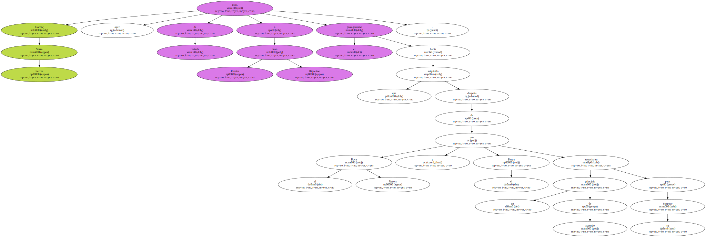
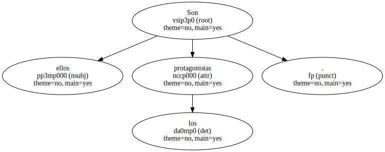
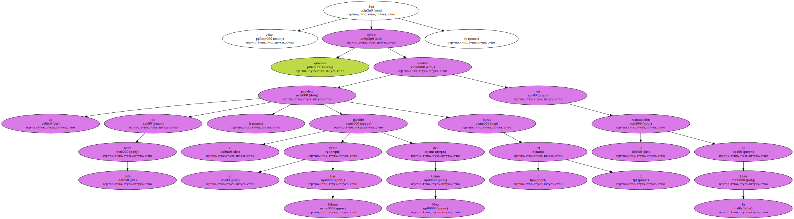
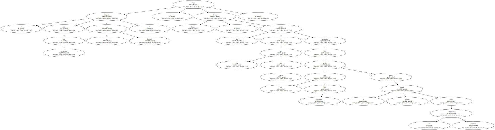
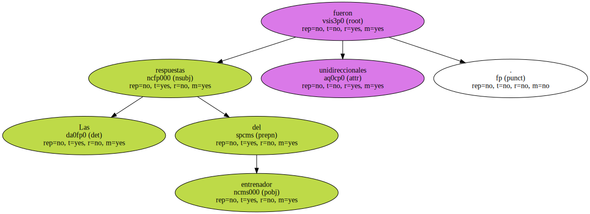
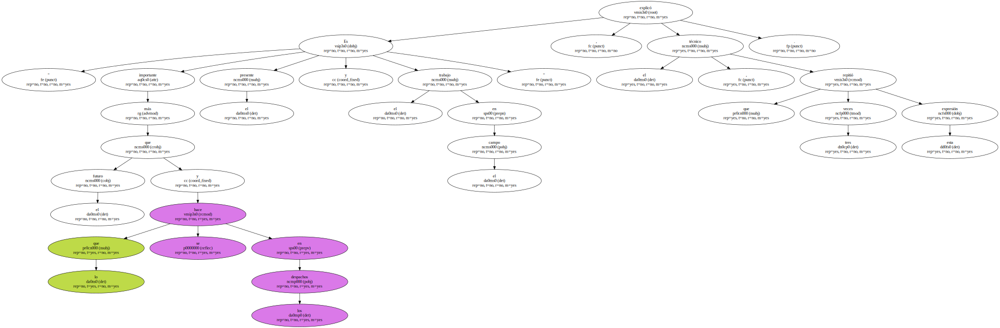
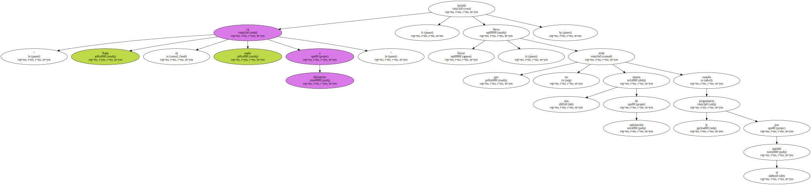
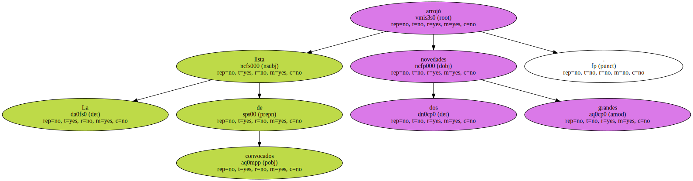
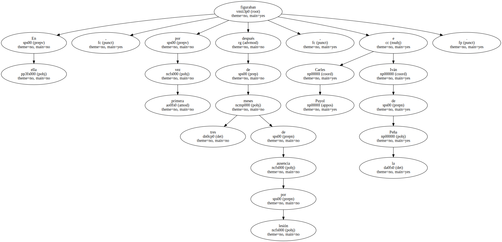
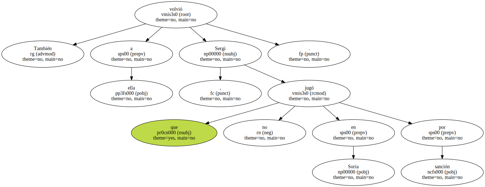

Llorenç Serra Ferrer trató ayer de restarle a Juan Román Riquelme el protagonismo que había adquirido después de que el Boca Júniors y el Barça anunciaran un principio de acuerdo para su traspaso.
El técnico azulgrana prefiere agarrarse a Rivaldo , a Luis Enrique , a cualquiera de sus hombres.

Son ellos los protagonistas.
Son ellos quienes deben resolver la papeleta de esta tarde , el partido frente al Las Palmas del Camp Nou ( 19 horas ) en la reanudación de la Liga.
" Importa más el Las Palmas que Riquelme " , dijo Serra Ferrer , que acudió a la sala de prensa preparado para recibir un alud de preguntas sobre el primer fichaje para la próxima temporada.
Las respuestas del entrenador fueron unidireccionales.
" Es más importante el presente y el trabajo en el campo que el futuro y lo que se hace en los despachos " , explicó el técnico , que repitió tres veces esta expresión.
" Nada ni nadie va a distraerme " , insistió Serra Ferrer , que no evitó una mueca de satisfacción cuando le preguntaron por el partido.
La lista de convocados arrojó dos grandes novedades.
En ella figuraban , por primera vez después de tres meses de ausencia por lesión , Carles Puyol e Iván de la Peña.
También volvió a ella Sergi , que no jugó en Soria por sanción.
